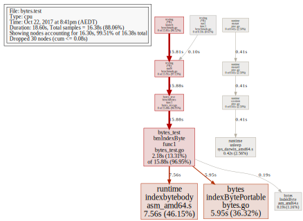
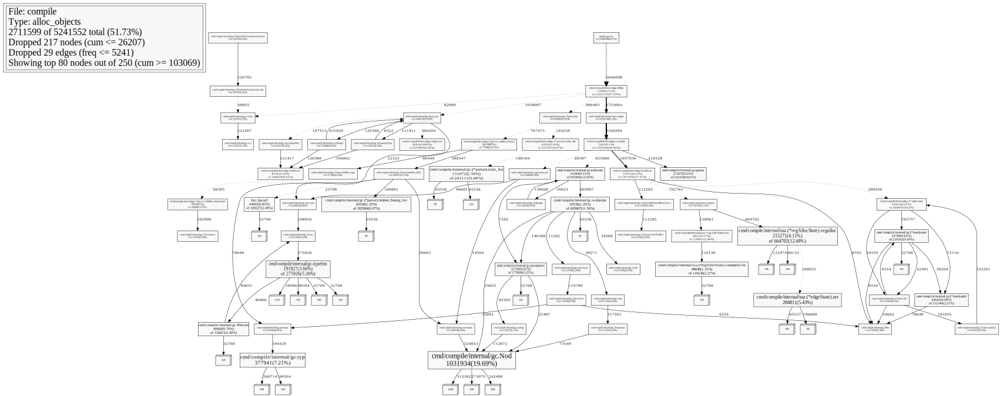
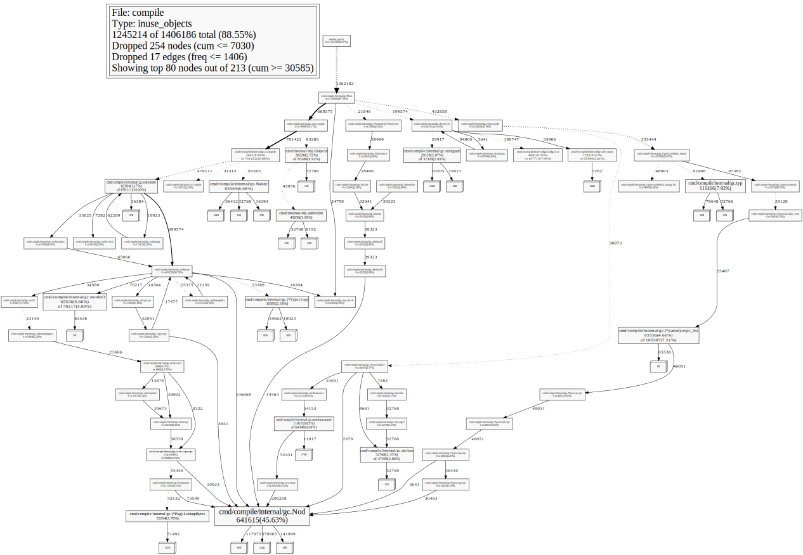
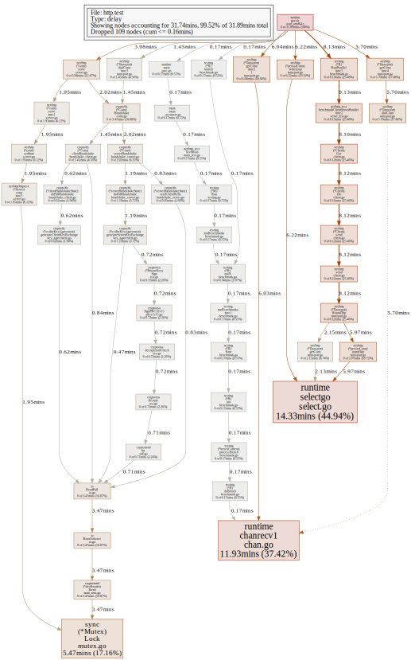
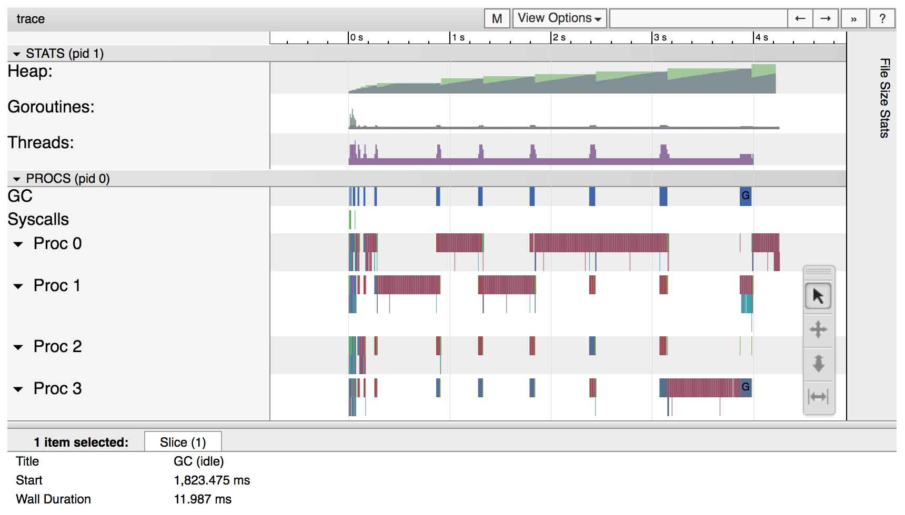

视频笔记：7种 Go 程序性能分析方法 - Dave Cheney
- 视频信息
- 方法一：
time - 方法二：
GODEBUG - 插曲一：Profiler 是如何工作的？
- 方法三：
pprof - 方法四：
/debug/pprof - 插曲二：Frame Pointer
- 方法五：
perf - 方法六：火焰图 (Flame Graph)
- 方法七：
go tool trace - 总结
视频信息 #
Seven ways to Profile Go Applications
by Dave Cheney
at Golang UK Conf. 2016
- 视频：https://www.youtube.com/watch?v=2h_NFBFrciI
- 幻灯：http://talks.godoc.org/github.com/davecheney/presentations/seven.slide#1
方法一：time #
shell 内置的 time #
最简单的性能测试工具就是 shell 中内置的 time 命令，这是由 POSIX.2 (IEEE Std 1003.2-1992) 标准定义的，因此所有 Unix/Linux 都有这个内置命令。
1 | $ time go fmt github.com/docker/machine |
这是使用shell内置的 time来对 go fmt github.com/docker/machine 的命令进行性能分析。
这里一共有3项指标：
real：从程序开始到结束，实际度过的时间；user：程序在用户态度过的时间；sys：程序在内核态度过的时间。
一般情况下 real >= user + sys，因为系统还有其它进程。
GNU 实现的 time #
除此以外，对于 Linux 系统，还有一套 GNU 的 time，位于 /usr/bin/time，需要用完整路径去调用，不过这个功能就更强大了。
1 | vagrant@vagrant:~$ /usr/bin/time -v go fmt github.com/docker/machine |
可以看到这里的功能要强大多了，除了之前的信息外，还包括了：
- CPU占用率；
- 内存使用情况；
- Page Fault 情况；
- 进程切换情况；
- 文件系统IO；
- Socket 使用情况；
- ……
*BSD、macOS 的 time #
*BSD 也有自己实现的 time，功能稍逊，但也比 Shell 里的 time 强大。比如 macOS 中继承自 FreeBSD 的 time：
1 | $ /usr/bin/time -l go fmt github.com/docker/machine |
这里有：
- 内存使用情况
- Page Fault 情况
- IO 情况
- 进程切换情况
- Signal 情况
- ……
go tool 中的 -toolexec 参数 #
当我们构建很慢的时候，如何才能知道为什么慢呢？go 工具链中支持 -x 命令，可以显示具体执行的每一条命令，这样我们就可以看到到底执行到哪里的时候慢了。
1 | $ go build -x fmt |
但是如果构建时间很长，或者是计划在 CI 中运行，我们就不可能一直盯着了。当然，我们可以时候从输出中复制粘贴到命令行，前缀上 time，也可以知道每个命令的执行时间。不过这太繁琐了。
go tool 工具链中，还支持一个叫做 -toolexec 的参数，其值将作为工具链每一个命令的前缀来执行。
1 | go build -toolexec=... github.com/pkg/profile |
换句话说，如果 -toolexec=time，那么假如有一个 go build xxx.go 的命令，就会变为 time go build xxx.go 来执行。
1 | $ go build -toolexec="/usr/bin/time" cmd/compile/internal/gc |
用好了，这就可以变得很强大，不仅仅是计时。比如，我们 go build 的时候我们可以在 Mac 或者 Linux 上进行交叉编译，但是 go test 的时候，我们希望则在手机设备上直接运行。另外，也可以用来校验输出结果的一致性 （toolstash）
方法二：GODEBUG #
/usr/bin/time 是外部工具，除此外，我们还可以使用 Go 内置的功能。Go 的 runtime 可以收集程序运行周期内的很多数据。当然，这些收集默认都是不启用的，你可以手动启用特定信息的收集。
比如，如果你关心垃圾收集，则可以启用 gctrace=1 标志。如：
1 | $ env GODEBUG=gctrace=1 godoc -http=:8080 |
这样的话，垃圾收集的信息都会被输出出来，可以帮助 GC 排障。如果发现 GC 一直都在很忙碌的工作，那恐怕内存管理上有可以改进的地方。
插曲一：Profiler 是如何工作的？ #
Profiler 会启动你的程序，然后通过配置操作系统，来定期中断程序，然后进行采样。比如发送 SIGPROF 信号给被分析的进程，这样进程就会被暂停，然后切换到 Profiler 中进行分析。Profiler 则取得被分析的程序的每个线程的当前位置等信息进行统计，然后恢复程序继续执行。
性能分析注意事项 #
- 性能分析必须在一个可重复的、稳定的环境中来进行。
- 机器必须闲置。
- 不要在共享硬件上进行性能分析;
- 不要在性能分析期间，在同一个机器上去浏览网页！！😓；
- 注意省电模式和过热保护，如果突然进入这些模式，会导致分析数据严重不准确
- 不要使用虚拟机、共享的云主机，太多干扰因素，分析数据会很不一致；
- 不要在 macOS 10.11 及以前的版本运行性能分析，有 bug，之后的版本修复了。
- 机器必须闲置。
如果承受得起，购买专用的性能测试分析的硬件设备，上架。
- 关闭电源管理、过热管理;
- 绝不要升级，以保证测试的一致性，以及具有可比性。
如果没有这样的环境，那就一定要在多个环境中，执行多次，以取得可参考的、具有相对一致性的测试结果。
方法三：pprof #
pprof 源自 Google Performance Tools 工具集。Go runtime 中内置了 pprof 的性能分析功能。这包含了两部分：
- 每个 Go 程序中内置
runtime/pprof包 - 然后用
go tool pprof来分析性能数据文件
CPU 性能分析 #
最常用的就是 CPU 性能分析，当 CPU 性能分析启用后，Go runtime 会每 10ms 就暂停一下，记录当前运行的 Go routine 的调用堆栈及相关数据。当性能分析数据保存到硬盘后，我们就可以分析代码中的热点了。
一个函数如果出现在数据中的次数越多，就越说明这个函数调用栈占用了更多的运行时间。
内存性能分析 #
内存性能分析则是在堆(Heap)分配的时候，记录一下调用堆栈。默认情况下，是每 1000 次分配，取样一次，这个数值可以改变。
栈(Stack)分配 由于会随时释放，因此不会被内存分析所记录。
由于内存分析是取样方式，并且也因为其记录的是分配内存，而不是使用内存。因此使用内存性能分析工具来准确判断程序具体的内存使用是比较困难的。
阻塞性能分析 #
阻塞分析是一个很独特的分析。它有点儿类似于 CPU 性能分析，但是它所记录的是 goroutine 等待资源所花的时间。
阻塞分析对分析程序并发瓶颈非常有帮助。阻塞性能分析可以显示出什么时候出现了大批的 goroutine 被阻塞了。阻塞包括：
- 发送、接受无缓冲的 channel；
- 发送给一个满缓冲的 channel，或者从一个空缓冲的 channel 接收；
- 试图获取已被另一个 go routine 锁定的
sync.Mutex的锁；
阻塞性能分析是特殊的分析工具，在排除 CPU 和内存瓶颈前，不应该用它来分析。
一次只分析一个东西 #
性能分析不是没有开销的。虽然性能分析对程序的影响并不严重，但是毕竟有影响，特别是内存分析的时候增加采样率的情况。大多数工具甚至直接就不允许你同时开启多个性能分析工具。如果你同时开启了多个性能分析工具，那很有可能会出现他们互相观察对方的开销从而导致你的分析结果彻底失去意义。
所以，一次只分析一个东西。
对函数分析 #
最简单的对一个函数进行性能分析的办法就是使用 testing 包。testing 包内置支持生成 CPU、内存、阻塞的性能分析数据。
-cpuprofile=xxxx： 生成 CPU 性能分析数据，并写入文件xxxx；-memprofile=xxxx： 生成 内存 性能分析数据，并写入文件xxxx；-memprofilerate=N：调整采样率为1/N；
-blockprofile=xxxx： 生成 阻塞 性能分析数据，并写入文件xxxx；
如：
1 | $ go test -run=XXX -bench=IndexByte -cpuprofile=/tmp/c.p bytes |
注意这里的
-run=XXX是说只运行 Benchmarks，而不要运行任何 Tests。
然后我们用 go tool pprof 来分析：
1 | $ go tool pprof bytes.test /tmp/c.p |
对整个应用分析 #
testing 适用于分析具体某个函数，但是如果想分析整个应用，则可以使用 runtime/pprof 包。当然这比较底层，Dave Cheney 在几年前还写了个包 github.com/pkg/profile，可以简化使用。
只需要在启动的时候加入 defer profile.Start().Stop() 即可。
1 | import "github.com/pkg/profile" |
方法四：/debug/pprof #
pprof 适合在开发的时候进行分析，从运行到结束。但是如果应用已经在数据中心运行，我们希望远程启用调试进行在线分析，这种情况，可以通过 http 远程调试。
1 | import _ "net/http/pprof" |
然后使用 pprof 工具来查看一段 30秒 的：
- CPU 性能分析数据：
1 | go tool pprof http://localhost:3999/debug/pprof/profile |
- 内存性能分析数据：
1 | go tool pprof http://localhost:3999/debug/pprof/heap |
在
/debug/pprof/heap页面的最下方，是runtime.MemStats，这是你的应用真实使用内存的情况（不仅仅是分配）。其中的HeapSys是应用从系统申请到的页面数量。
- 阻塞性能分析数据：
1 | go tool pprof http://localhost:3999/debug/pprof/block |
使用 pprof #
pprof 始终需要两个参数：
1 | go tool pprof /path/to/your/binary /path/to/your/profile |
binary必须指向生成这个性能分析数据的那个二进制可执行文件；profile必须是该二进制可执行文件所生成的性能分析数据文件。
换句话说，binary 和 profile 必须严格匹配。
由于 pprof 有在线模式，可以获取性能分析数据文件，所以很多人误解了可以只有 profile。所有可能会有人执行：
1 | go tool pprof /tmp/c.p |
不是这样的，这样会发现显示 profile 里面是空的。
我们可以在命令行里分析：
1 | $ go tool pprof bytes.test /tmp/c.p |
这显然很不直观，性能分析更好的是使用可视化分析。可以在交互模式下执行 web 命令，这样会生成一个 svg 文件，然后用浏览器或者其它工具打开。

这个图是 CPU 性能分析的图，这里可以直观的看出哪个地方最消耗 CPU，使用时间越多的，方块面积就越大。而且由于其继承关系清晰可见，我们可以很清楚的看到为什么它会消耗很多 CPU。
这里默认是 -svg，还可以设置为 -pdf 等，可以用 go tool pprof -help 来查看详细配置。
推荐阅读：
除了可视化 CPU 性能分析外，同样可以分析内存和阻塞。
内存性能分析： #
1 | $ go build -gcflags='-memprofile=/tmp/m.p' |
- alloc_objects

- inuse_objects

阻塞性能分析 #
这里分析的是 net/http 包：
1 | $ go test -run=XXX -bench=ClientServer -blockprofile=/tmp/b.p net/http |

插曲二：Frame Pointer #
Frame pointer 是整个 Unix/Linux 调试工具链的核心的东西。Frame Pointer 就是一个指向调用栈顶端的寄存器。
Go 从 1.7 开始，编译器默认启用 Frame pointers 了。所以像 gdb、perf 命令也可以理解 Go 的调用栈，从而可以进行调试分析。
方法五：perf #
对于 Linux 用户来说，perf 是一个非常好的工具。由于现在 Go 已经支持了 Frame Pointer，所以可以和 -toolexec= 配合来对 Go 应用进行性能分析。
1 | $ go build -toolexec="perf stat" cmd/compile/internal/gc |
我们也可以用 perf record 来记录一段性能分析数据。
1 | $ go build -toolexec="perf record -g -o /tmp/p" cmd/compile/internal/gc |

方法六：火焰图 (Flame Graph) #
火焰图(Flame Graph) 也是性能分析的利器。最初是由 Netflix 的 Brendan Gregg 发明并推广的。
X 轴显示的是在该性能指标分析中所占用的资源量，也就是横向越宽，则意味着在该指标中占用的资源越多，Y 轴则是调用栈的深度。
有几点需要注意：
- 左右顺序不重要，X 轴不是按时间顺序发生的，而是按字母顺序排序的
- 虽然很好看，但是颜色深浅没关系，这是随机选取的。
火焰图可以来自于很多数据源，包括 pprof 和 perf。
感谢 Uber 提供了火焰图的 Go 的工具，go-torch，在你提供了 /debug/pprof 的情况下，可以自动进行分析处理生成火焰图。
1 | $ go build -gcflags=-cpuprofile=/tmp/c.p . |

方法七：go tool trace #
在 Go 1.5 的时候，Dmitry Vyukov 在 runtime 里添加了一个新的性能分析工具，execution tracer profile。
1 | $ go test -trace=trace.out path/to/package |
这个工具可以用来分析程序动态执行的情况，并且分析的精度达到纳秒级别：
- goroutine 创建、启动、结束
- gorouting 阻塞、恢复
- 网络阻塞
- 系统调用（syscall）
- GC 事件
这个工具目前介绍的文档不多，https://golang.org/pkg/runtime/trace/。只有很少量的文档，或许应该有一些文档、博客啥的描述一下。这里有几个文档可以看看：
- https://docs.google.com/document/u/1/d/1FP5apqzBgr7ahCCgFO-yoVhk4YZrNIDNf9RybngBc14/pub
- https://www.dotconferences.com/2016/10/rhys-hiltner-go-execution-tracer
通过 -traceprofile= 来标志生成性能分析文件。
比如这里我们构建包 cmd/compile/internal/gc，并生成构建的性能分析数据文件。
1 | $ go build -gcflags=-traceprofile=/tmp/t.p cmd/compile/internal/gc |
这会打开一个浏览器，显示：
- View trace
- Goroutine analysis
- Network blocking profile
- Synchronization blocking profile
- Syscall blocking profile
- Scheduler latency profile
点进去就可以看到各种分析。

另外，Dave Cheney 做的 pkg/profile 也支持生成 trace profile 了。
1 | import "github.com/pkg/profile" |
总结 #
不同的工具可以从不同的角度对你的应用进行分析。一般你不需要非得把上面提及的每个工具都用一遍，但是建议大家熟悉一下上面的工具，先从小的东西开始，当熟悉之后，在真正需要的时候，才可以快速的选择自己所需的工具来诊断问题。